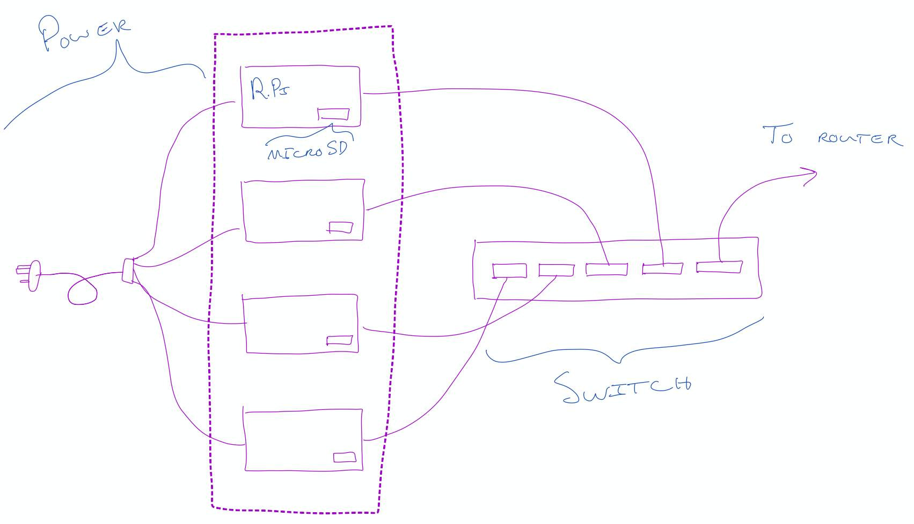
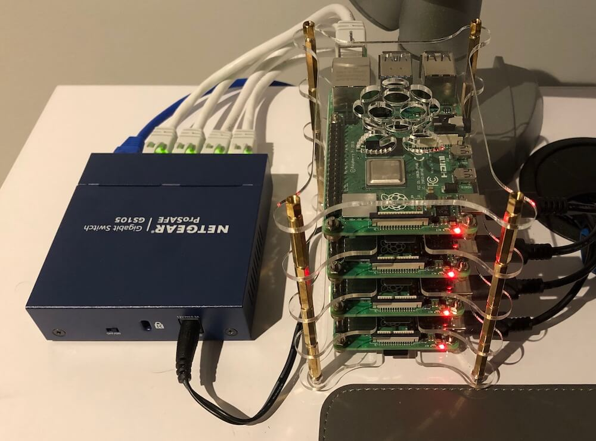

Building a Raspberry Pi Cluster for Building Toy Distributed Systems
Oct 24, 2020 · 571 words · 3 minutes read
I’ve recently been getting more interested in distributed systems, and I wanted to get experience building some of the concepts I’ve read about.
My interest lies more on the software and system design side – more “how would we design and build an example of a distributed file system across four computers?” than “how do I make a reliable home server to play media?” – which is why my focus is on playing around with some toy software problems instead of worrying about what a real production hardware setup would look like. As with anything, it’s almost too easy to get caught up in the minor details instead of what you meant to work on, and I feel like I could spend days agonizing over hardware choices.
That being said, I did want to work with real hardware, which makes it more interesting than running VMs. There’s something about physically disconnecting ethernet switches to see the effect on the software that’s intriguing, and doubly so if the software can handle it gracefully.
I want to get a little more experience with the concepts behind some distributed systems papers and projects I’ve learned about. I’ve heard that the true devil of distributed systems lies in the details at scale, which isn’t really possible for my tiny cluster, but I’m planning to work through these projects to get a better feel for some of the general ideas. I’ve found that programming an implementation is one of the best ways to understand a concept, even if it’s a toy implementation, and I’m looking forward to doing so for some of the papers I’ve been reading.
I’m planning to write most of the software in Go because I’ve enjoyed working with its RPC library in the past and I want to get more experience working with the language. I do mostly C++/Java/JavaScript at work, and it’s always nice to explore outside of the comfort zone.
Anyways, back to the cluster; I ended up picking N=4 for my little cluster and drew up a quick diagram of what my plan:

This ended up actually being pretty close to reality, which is always nice for design diagrams. I’ll spare you the order details (I’ve found these can quickly get out of date), but after the components trickled in, I wired up the Pis from 1-4 from bottom to top with a helpful case to keep them separate.

So far I’ve done the following:
- Installed the Raspberry Pi OS Lite on each MicroSD & enabled SSH
- Grabbed the IPs and SSH’ed into each
- Had to re-image a MicroSD after I didn’t save the password I generated
- Did some basic ssh/scp/config setup to install .vimrc/tmux/vim/git/Go
- Wrote up a basic heartbeat monitoring program to get them talking to each other
- Spent 15 minutes debugging before I realized the switch was turned off
My next steps are probably something like this, time and motivation permitting:
- Flesh out and write up the heartbeat monitoring program
- Design and implement a basic distributed file system that I can reuse for future projects
- Probably will follow along with GFS but with some appropriate adjustments
- Work through a few papers and adapt them to the mini-cluster
- Tentatively thinking MapReduce, some KV store (implementing consistent hashing), Raft, etc.
Stay tuned for more :)